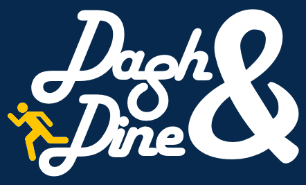

Hi, my name is Tiffany!
I am currently a junior at Drexel University majoring in Computer Science with concentrations in Human-Computer Interaction and Software Engineering. My interests include front-end developement, UX and mobile/web development.
Besides designing web applications, I enjoy eating, playing board games and traveling.
Places and things I've been to include:
- 05 / 2014 - CodeDay Philly in Philadelphia, PA
- 10 / 2014 - The Grace Hopper Conference in Phoenix, AZ
- 09 / 2015 - Intensive course abroad with Tamagawa University in Tokyo, Japan
- 10 / 2016 - The Grace Hopper Conference in Houston, TX
I will also be studying abroad at the City University of Hong Kong located in Kowloon Tong, Hong Kong this upcoming January to May.
Thanks for visiting my website!
Takeout
Role: Sole Programmer
Independent project (Ongoing)
The purpose of this project is to practice developing front-end by redesigning the website for my favorite takeout place,
China House.
Parlor
Role: Front-End Developer
Worked with Alec Newman
A distributed board game server that was created by a desire to play games with friends.
The theme of the front-end is reminiscent of vintage board games.
Customer Profile Wireframe
Role: Sole Programmer
Independent project
The purpose of this project was to design a wireframe utilizing a set of given components and organize the information is a logical manner.

Dash & Dine